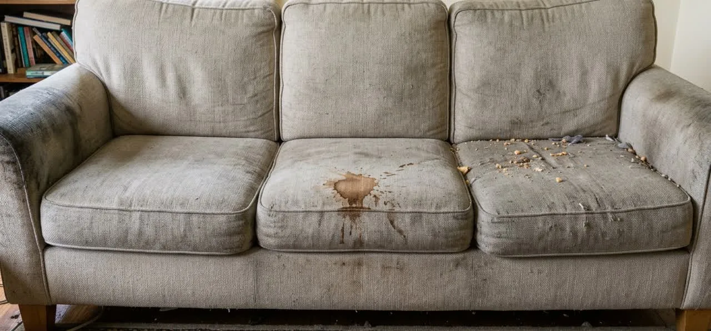
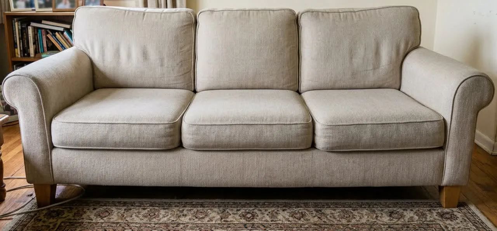

Потяните ползунок. Слева диван, каким его видит мастер на выезде: пятно на сиденье, крошки, потемневшие подлокотники. Справа он же после экстракторной чистки. Комната та же, диван тот же, ракурс не менялся.


До чистки ПослеПолзунок двигается мышью, пальцем и стрелками на клавиатуре
Пыль, шерсть животных, разводы от воды, кофе, чай, сок, детские неожиданности, следы от рук на подлокотниках.
Застарелая краска, зелёнка, чернила и ржавчина. Мастер скажет об этом на осмотре, до начала работы.
Натуральную кожу и замшу, шёлк и вискозу без маркировки состава, антиквариат и ковры ручной работы.